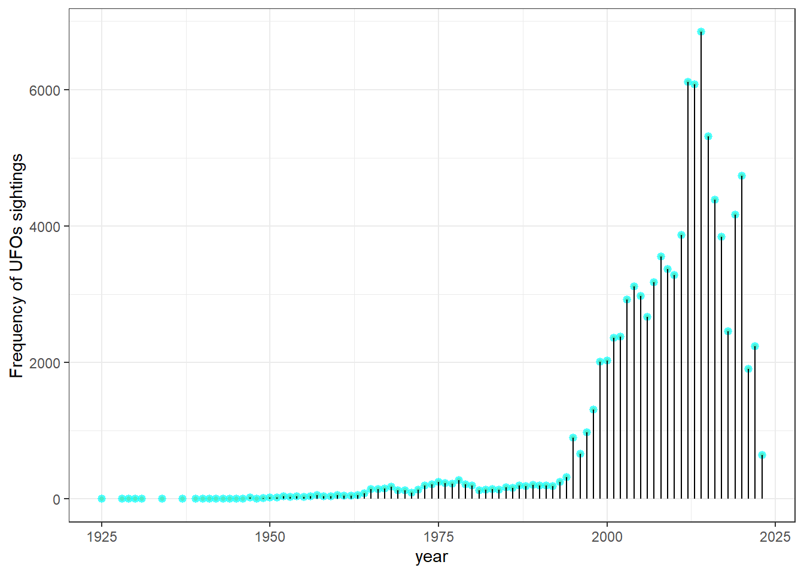
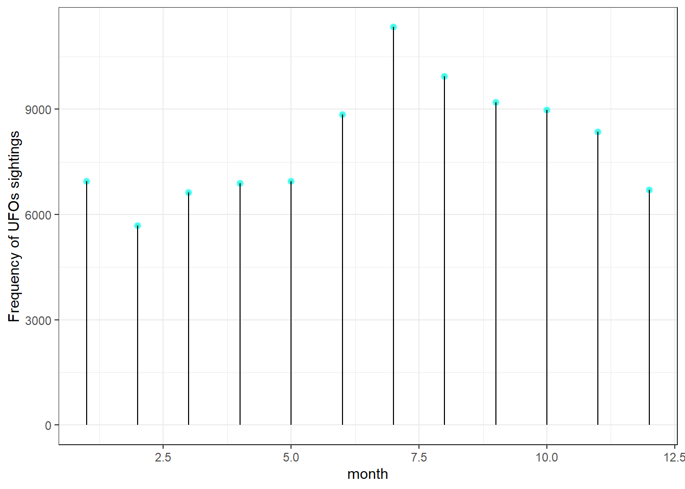
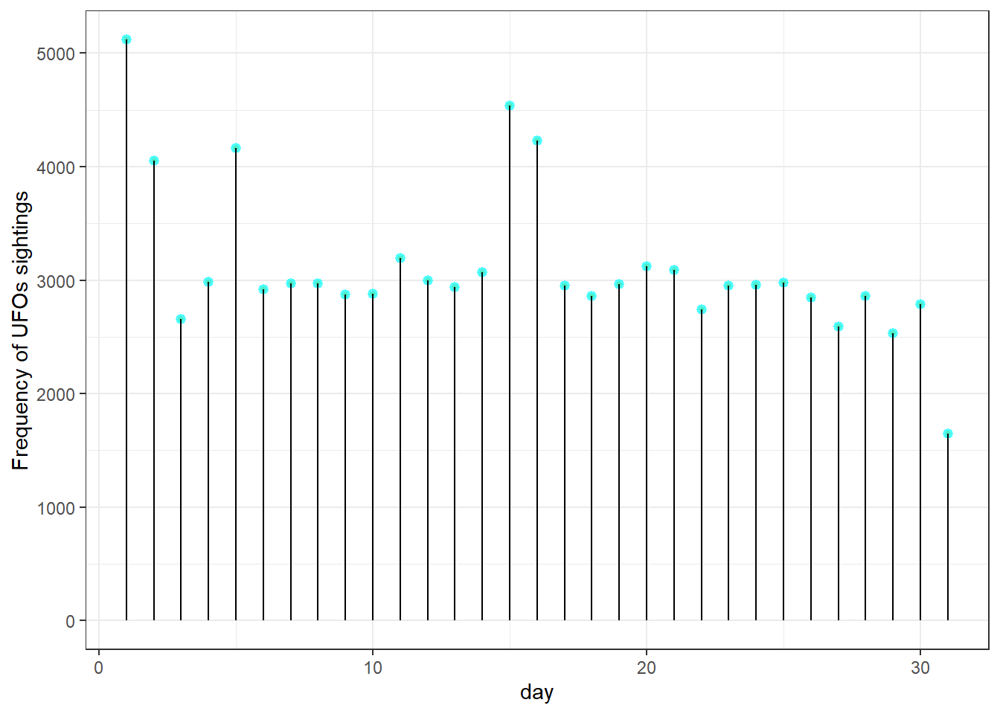
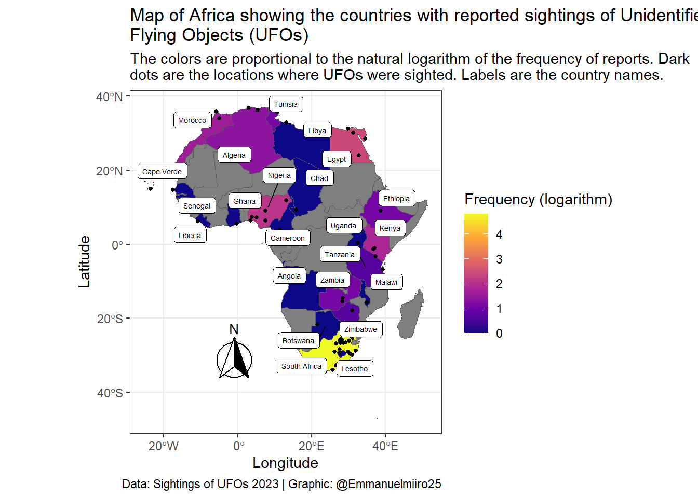

The data has 96429 observations. It was provided in 3 parts:
ufo_sightings (showing the first 12 observations)
Show the code
head(ufo_sightings) |>kable()
reported_date_time
reported_date_time_utc
posted_date
city
state
country_code
shape
reported_duration
duration_seconds
summary
has_images
day_part
2022-08-29 06:03:00
2022-08-29 06:03:00
2022-09-09
Pinehurst
NC
US
NA
15 mins
900
Saw multi color object above horizon.
FALSE
night
2022-08-20 01:51:00
2022-08-20 01:51:00
2022-10-08
Rapid City
MI
US
NA
1 minute
60
An object in the shape of a straight line about an inch from our viewing area moving slowly across the sky
FALSE
nautical dusk
2022-08-13 05:30:00
2022-08-13 05:30:00
2022-09-09
Cleveland
OH
US
NA
2 hours
172800
Tone in the air.
FALSE
night
2022-08-06 21:00:00
2022-08-06 21:00:00
2022-09-09
Bloomington
IN
US
NA
30 seconds
30
Black tic-tac shaped ufo. Moved with insane speed
FALSE
afternoon
2022-08-04 07:40:00
2022-08-04 07:40:00
2022-09-09
Irvine
CA
US
NA
3 minutes
180
Two alien were scanning me
FALSE
night
2022-07-22 16:00:00
2022-07-22 16:00:00
2022-09-09
Moore
OK
US
NA
10 minutes
600
Long cigar solid shaped craft with light beam
FALSE
morning
places (showing the first 12 observations)
Show the code
head(places) |>kable()
city
alternate_city_names
state
country
country_code
latitude
longitude
timezone
population
elevation_m
Pinehurst
Pajnkherst,bynhwrst,pynhwrst karwlynay shmaly,Пајнхерст,بينهورست,پینهورست، کارولینای شمالی
NC
USA
US
35.19543
-79.46948
America/New_York
15752
160
Rapid City
NA
MI
USA
US
44.83445
-85.28256
America/Detroit
1352
192
Cleveland
CLE,Cleaveland,Cleveland,Forest City,Klevalehnd,Kliulend,Klivelant,Klivland,Klivlandas,Klivlando,Klivlend,Klivlenda,Klīvlenda,ka fu lan,ke li fu lan,keullibeullaendeu,kilivlant,klebhilyanda,klivhalanda,klyfland,klywlnd,kuriburando,qlyblnd,Κλίβελαντ,Клевалэнд,Кливланд,Кливленд,Клівленд,Кліўленд,Քլիվլենդ,קליבלנד,קליוולאנד,كليفلاند,کلیولند,کلیولینڈ، اوہائیو,क्लीव्हलंड,ক্লেভিল্যান্ড,கிளீவ்லன்ட்,คลีฟแลนด์,კლივლენდი,クリーブランド,克利夫兰,克里夫蘭,卡夫蘭,클리블랜드
OH
USA
US
41.49950
-81.69541
America/New_York
388072
199
Bloomington
BMG,Bloomington,Blumington,Blumingtona,Blumingtun,Blūmingtona,beullumingteon,blumintana,blwmnghtwn,blwmyngtwn,blwmyngtwn ayndyana,bu lu ming dun,buruminton,Блумингтон,Блумингтън,Блумінгтон,בלומינגטון,بلومنغتون,بلومنگٹن، انڈیانا,بلومینگتون، ایندیانا,ব্লুমিংটন,ブルーミントン,布卢明顿,블루밍턴
The full description of the variables can be found here.
I found the following questions interesting so I explored them visually.
What are the time trends in the sighting of UFOs?
We explore how the frequency of sightings of UFOs varies by year (since 1925), month and day of the month in 3 visualizations.
Show the code
ufos_time <- ufo_sightings |>mutate(month =month(reported_date_time_utc, abbr =TRUE), day =day(reported_date_time_utc),year =year(reported_date_time_utc))# plot frequency of UFOs by yearufos_time |>group_by(year) |>summarise(n =n()) |>ggplot(aes(x = year, y = n)) +geom_point( size=0.15, color="cyan", fill=alpha("orange", 0.3), alpha=0.7, shape=21, stroke=2) +geom_segment(aes(x=year, xend = year, y =0, yend = n)) +labs(y ="Frequency of UFOs sightings") # frequency of UFOs by monthufos_time |>group_by(month) |>summarise(n =n()) |>ggplot(aes(x = month, y = n)) +geom_point( size=0.15, color="cyan", fill=alpha("orange", 0.3), alpha=0.7, shape=21, stroke=2) +geom_segment(aes(x=month, xend = month, y =0, yend = n)) +labs(y ="Frequency of UFOs sightings") # frequency of UFOs by day of the monthufos_time |>group_by(day) |>summarise(n =n()) |>ggplot(aes(x = day, y = n)) +geom_point( size=0.15, color="cyan", fill=alpha("orange", 0.3), alpha=0.7, shape=21, stroke=2) +geom_segment(aes(x=day, xend = day, y =0, yend = n)) +labs(y ="Frequency of UFOs sightings")

Frequency of UFOs sightings by year

Frequency of UFOs sightings by month

Frequency of UFOs sightings by day of the month
Frequency of sightings of UFOs by year, month and day of the month
The frequency of sightings of UFOs increased late in the 20th century and rapidly increased early in the 21st century.
Which countries and cities most commonly report sightings of UFOs?
We plot the world map filled with colors proportional to the frequency of sightings of UFOs. I found this tutorial on drawing maps programmatically super helpful.
Most of reports of UFOs sightings are from the United States of America (USA) and Alaska. Fewer sightings are reported from the rest of the world. There is a huge difference in the order of magnitude of the frequency of UFOs sightings with a maximum of 88213 and minimum of 1. The color fill is strained to capture that monstrous difference. We can apply a logarithmic transformation to show orders of magnitude.
Table showing the top 5 cities with the most reported sightings of UFOs
city
n
New York City
667
Seattle
666
Phoenix
634
Las Vegas
553
Portland
541
It is not feasible to display all 10721 cities on a single world map. So I’ll chose one region Africa in particular. Partly because I’m a proud African and partly because I’m interested in what surprises we shall uncover in a region with relatively low UFOs sightings.
Show the code
# get African country codes from the world dataset. Names came out as attributes to the vector of country codes.africa_codes <- world |>filter(continent =="Africa") |>pull(postal, name)# filter those African countries with UFO sightings ufo_africa <- ufo_sightings |>filter(country_code %in%!!africa_codes) |>group_by(country_code) |>summarise(n =n())# get a subset of the world data for plotting the African continentufo_africa_sf <- world |>filter(continent =="Africa") |>left_join(Ufo_country, by =join_by(postal == country_code))# convert places to sf for cities as pointsplaces_sf <- places |>filter(country_code %in%!! africa_codes) |>st_as_sf(coords =c("longitude", "latitude"), crs =4326) # compute centroids where country labels will be placedcentriod_coordinates <- ufo_africa_sf |>filter(postal %in% ufo_africa$country_code) |>st_centroid() |>st_coordinates() # combine the centriod coordinates with the sf_object subsetcountries_sf_centroids <-cbind(ufo_africa_sf |>filter(postal %in% ufo_africa$country_code), centriod_coordinates)# nudge south Africa to the left (to avoid obscuring Lesotho's label)countries_sf_centroids$nudge_X <-0countries_sf_centroids$nudge_X[countries_sf_centroids$name =="South Africa"] <--5# plotggplot(data = ufo_africa_sf) +geom_sf(aes(fill =log(n))) +geom_sf(data = places_sf, size =1, shape =19) +scale_fill_viridis_c(option ="plasma") +geom_label_repel(data = countries_sf_centroids, aes(X, Y, label = name), size =1.8, nudge_x = countries_sf_centroids$nudge_X) +labs(title = stringr::str_wrap("Map of Africa showing the countries with reported sightings of Unidentified Flying Objects (UFOs)", width =80), subtitle = stringr::str_wrap("The colors are proportional to the natural logarithm of the frequency of reports. Dark dots are the locations where UFOs were sighted. Labels are the country names.", width =90) ,caption ="Data: Sightings of UFOs 2023 | Graphic: @Emmanuelmiiro25", fill ="Frequency (logarithm)") +xlab("Longitude") +ylab("Latitude") +annotation_north_arrow(location ="bl", which_north ="true", pad_x =unit(0.75, "in"), pad_y =unit(0.5, "in"),style = north_arrow_fancy_orienteering)

Map of Africa showing the countries with reports of sightings of Unidentified Flying Objects (UFOs). The colors are proportional to the natural logarithm of the frequency of reports. Dark dots are the locations where UFOs were sighted. Labels are the country names.
South Africa has the highest number of reports of sightings of UFOs, followed by Egypt. Interestingly, the relatively small island of Cape Verde also reported sighting a UFO! The table below shows the top 5 African countries with the most sightings of UFOs.
Show the code
# rank the top 5 African countries with sightings of UFOsufo_africa |>mutate(country_name = xfun::attr(africa_codes[africa_codes %in% ufo_africa$country_code], which ="names")) |>arrange(desc(n)) |>head(5) |>kable()
This table shows the top 5 African countries with most reported sightings (n) of Unidentified Flying Objects (UFOs)
country_code
n
country_name
ZA
122
South Africa
EG
11
Egypt
NG
8
Nigeria
KE
6
Kenya
MA
5
Morocco
That’s it for this week’s /#TidyTuesday.
Source Code
---title: "Plots for UFO sightings"author: Dr. Miiro Emmanueleditor: visualdate: 2023-06-20date-format: shorthighlight-style: pygmentsformat: html: code-fold: true code-tools: true code-summary: "Show the code"editor_options: chunk_output_type: console---```{r}#| label: load-packages#| warning: false#| message: falselibrary(tidyverse)library(here)theme_set(theme_bw())library("sf")library("rnaturalearth")library("rnaturalearthdata")library(ggrepel)library(knitr)library(ggspatial)world <-ne_countries(scale ="medium", returnclass ="sf")ufo_sightings <- readr::read_csv( here::here("data","2023","2023-06-20","ufo_sightings.csv" ))places <- readr::read_csv( here::here("data","2023","2023-06-20","places.csv" ))day_parts_map <- readr::read_csv( here::here("data","2023","2023-06-20","day_parts_map.csv" ))```# Sightings of Unidentified Flying Objects (UFOs)The data on sightings of UFOs was collated by [Jon Harmon](https://github.com/jonthegeek/apis/) from the [National UFO Reporting Center](https://nuforc.org/webreports/ndxshape.html). He enriched the data with additional features. It was provided as part of the weekly [TidyTuesday challenge](https://github.com/rfordatascience/tidytuesday/blob/master/data/2023/2023-06-20/readme.md).## Structure of the dataThe data has `r nrow(ufo_sightings)` observations. It was provided in 3 parts:1. ufo_sightings (showing the first 12 observations)```{r}#| label: check-ufo-sightingshead(ufo_sightings) |>kable()```2. places (showing the first 12 observations)```{r}#| label: check-placeshead(places) |>kable()```3. day_parts_map (showing the first 12 observations)```{r}#| label: check-day-placeshead(day_parts_map) |>kable()```The full description of the variables can be found [here](https://github.com/rfordatascience/tidytuesday/blob/master/data/2023/2023-06-20/readme.md).I found the following questions interesting so I explored them visually.## What are the time trends in the sighting of UFOs?We explore how the frequency of sightings of UFOs varies by year (since `r min(year(ufo_sightings$reported_date_time_utc))`), month and day of the month in 3 visualizations.```{r}#| label: time-trends#| layout: [[100], [45,-10, 45]]#| fig-cap: "Frequency of sightings of UFOs by year, month and day of the month"#| fig-subcap: #| - "Frequency of UFOs sightings by year"#| - "Frequency of UFOs sightings by month"#| - "Frequency of UFOs sightings by day of the month"#| fig-alt: "A lollipop graph showing the Frequency of sightings of Unidentified Flying Objects (UFOs) by year, month and day. The graph for year shows a rapid increase in sightings of UFOs towards the late 20th and early 21st centuries."ufos_time <- ufo_sightings |>mutate(month =month(reported_date_time_utc, abbr =TRUE), day =day(reported_date_time_utc),year =year(reported_date_time_utc))# plot frequency of UFOs by yearufos_time |>group_by(year) |>summarise(n =n()) |>ggplot(aes(x = year, y = n)) +geom_point( size=0.15, color="cyan", fill=alpha("orange", 0.3), alpha=0.7, shape=21, stroke=2) +geom_segment(aes(x=year, xend = year, y =0, yend = n)) +labs(y ="Frequency of UFOs sightings") # frequency of UFOs by monthufos_time |>group_by(month) |>summarise(n =n()) |>ggplot(aes(x = month, y = n)) +geom_point( size=0.15, color="cyan", fill=alpha("orange", 0.3), alpha=0.7, shape=21, stroke=2) +geom_segment(aes(x=month, xend = month, y =0, yend = n)) +labs(y ="Frequency of UFOs sightings") # frequency of UFOs by day of the monthufos_time |>group_by(day) |>summarise(n =n()) |>ggplot(aes(x = day, y = n)) +geom_point( size=0.15, color="cyan", fill=alpha("orange", 0.3), alpha=0.7, shape=21, stroke=2) +geom_segment(aes(x=day, xend = day, y =0, yend = n)) +labs(y ="Frequency of UFOs sightings") ```The frequency of sightings of UFOs increased late in the 20^th^ century and rapidly increased early in the 21^st^ century.## Which countries and cities most commonly report sightings of UFOs?We plot the world map filled with colors proportional to the frequency of sightings of UFOs. I found [this](https://r-spatial.org//r/2018/10/25/ggplot2-sf.html) tutorial on drawing maps programmatically super helpful.```{r}#| label: maps-world#| fig-cap: "Frequency of sightings of UFOs across the world."#| fig-alt: "A world map showing the frequency of sightings of Unidentified Flying Objects (UFOs) across the world. The United States of America and Alaska have the highest frequency of reported UFOs sightings."Ufo_country <- ufo_sightings |>group_by(country_code) |>summarise(n =n())ufo_countries_sf <- world |>left_join(Ufo_country, by =join_by(postal == country_code))ggplot(data = world) +geom_sf(data = ufo_countries_sf, aes(fill = n)) +scale_fill_viridis_c(option ="plasma") +labs(fill ="Frequency")```Most of reports of UFOs sightings are from the United States of America (USA) and Alaska. Fewer sightings are reported from the rest of the world. There is a huge difference in the order of magnitude of the frequency of UFOs sightings with a maximum of `r max(Ufo_country$n)` and minimum of `r min(Ufo_country$n)`. The color fill is strained to capture that monstrous difference. We can apply a logarithmic transformation to show orders of magnitude.```{r}#| label: maps-world-log-transformed#| fig-cap: "Frequency of sightings of UFOs across the world applying a log transformation"#| fig-alt: "A world map showing the log frequency of sightings of Unidentified Flying Objects (UFOs) across the world. In addition to the United States of America and Alaska, Canada and Australia also have relatively high frequency of reported UFOs sightings."ggplot(data = world) +geom_sf(data = ufo_countries_sf, aes(fill =log(n))) +scale_fill_viridis_c(option ="plasma") +labs(fill ="Frequency (logarithm)") ```This map reveals that in addition to the USA and Alaska, Canada and Australia also have a relatively high frequency of UFOs sightings.### Cities (in Africa)Sightings of UFOs were reported from `r length(unique(places$city))` unique cities! The top 5 cities with the most reported sightings of UFOs are:```{r}#| label: cities-ranked-tbl#| tbl-cap: Table showing the top 5 cities with the most reported sightings of UFOsufo_sightings |>group_by(city) |>summarise(n =n()) |>arrange(desc(n)) |>head(5) |>kable()```It is not feasible to display all `r length(unique(places$city))` cities on a single world map. So I'll chose one region Africa in particular. Partly because I'm a proud African and partly because I'm interested in what surprises we shall uncover in a region with relatively low UFOs sightings.```{r}#| label: map-africa#| warning: false#| fig-cap: Map of Africa showing the countries with reports of sightings of Unidentified Flying Objects (UFOs). The colors are proportional to the natural logarithm of the frequency of reports. Dark dots are the locations where UFOs were sighted. Labels are the country names.#| fig-alt: A map of Africa showing countries with reports of sightings of UFOs. The color fill is proportionate to the natural logarithm of frequency of reports with yellow the highes and blue the lowest. South Africa has the highest frequency of reports.# get African country codes from the world dataset. Names came out as attributes to the vector of country codes.africa_codes <- world |>filter(continent =="Africa") |>pull(postal, name)# filter those African countries with UFO sightings ufo_africa <- ufo_sightings |>filter(country_code %in%!!africa_codes) |>group_by(country_code) |>summarise(n =n())# get a subset of the world data for plotting the African continentufo_africa_sf <- world |>filter(continent =="Africa") |>left_join(Ufo_country, by =join_by(postal == country_code))# convert places to sf for cities as pointsplaces_sf <- places |>filter(country_code %in%!! africa_codes) |>st_as_sf(coords =c("longitude", "latitude"), crs =4326) # compute centroids where country labels will be placedcentriod_coordinates <- ufo_africa_sf |>filter(postal %in% ufo_africa$country_code) |>st_centroid() |>st_coordinates() # combine the centriod coordinates with the sf_object subsetcountries_sf_centroids <-cbind(ufo_africa_sf |>filter(postal %in% ufo_africa$country_code), centriod_coordinates)# nudge south Africa to the left (to avoid obscuring Lesotho's label)countries_sf_centroids$nudge_X <-0countries_sf_centroids$nudge_X[countries_sf_centroids$name =="South Africa"] <--5# plotggplot(data = ufo_africa_sf) +geom_sf(aes(fill =log(n))) +geom_sf(data = places_sf, size =1, shape =19) +scale_fill_viridis_c(option ="plasma") +geom_label_repel(data = countries_sf_centroids, aes(X, Y, label = name), size =1.8, nudge_x = countries_sf_centroids$nudge_X) +labs(title = stringr::str_wrap("Map of Africa showing the countries with reported sightings of Unidentified Flying Objects (UFOs)", width =80), subtitle = stringr::str_wrap("The colors are proportional to the natural logarithm of the frequency of reports. Dark dots are the locations where UFOs were sighted. Labels are the country names.", width =90) ,caption ="Data: Sightings of UFOs 2023 | Graphic: @Emmanuelmiiro25", fill ="Frequency (logarithm)") +xlab("Longitude") +ylab("Latitude") +annotation_north_arrow(location ="bl", which_north ="true", pad_x =unit(0.75, "in"), pad_y =unit(0.5, "in"),style = north_arrow_fancy_orienteering)```South Africa has the highest number of reports of sightings of UFOs, followed by Egypt. Interestingly, the relatively small island of Cape Verde also reported sighting a UFO!The table below shows the top 5 African countries with the most sightings of UFOs.```{r}#| label: African-countries-ranked#| tbl-cap: This table shows the top 5 African countries with most reported sightings (n) of Unidentified Flying Objects (UFOs)# rank the top 5 African countries with sightings of UFOsufo_africa |>mutate(country_name = xfun::attr(africa_codes[africa_codes %in% ufo_africa$country_code], which ="names")) |>arrange(desc(n)) |>head(5) |>kable()```That's it for this week's /#TidyTuesday.